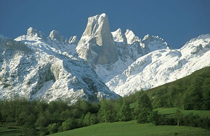
Escapade de 4 jours
Les Pics d'Europe
De la Cantabrie aux Asturies
Cangas de Onís · Covadonga · Ribadesella · Comillas
Une parenthèse entre montagnes, patrimoine et gastronomie

vpdvoyages.com
🏔️ L'ESPRIT DU VOYAGE
4 jours pour découvrir les grands paysages des Pics d'Europe et l'âme asturienne. Niché au cœur des Asturies, Cangas de Onís est la porte d'entrée des Pics d'Europe. Ancienne capitale du Royaume des Asturies, la ville mêle patrimoine, traditions et nature.
À quelques kilomètres, Covadonga et ses lacs alpins offrent un décor spectaculaire, tandis que les villages côtiers de Ribadesella et San Vicente de la Barquera apportent une autre facette du voyage.
🏔️ Pics d'Europe
🌊 Mer Cantabrique
🏛️ Patrimoine
🍽️ Gastronomie
📍 LOCALISATION
Un itinéraire pensé pour relier mer, montagne et patrimoine
🚩 Départ : Santillana del Mar
🏔️ Cœur : Cangas de Onís · Covadonga
🔄 Boucle : Ribadesella · Comillas · San Vicente
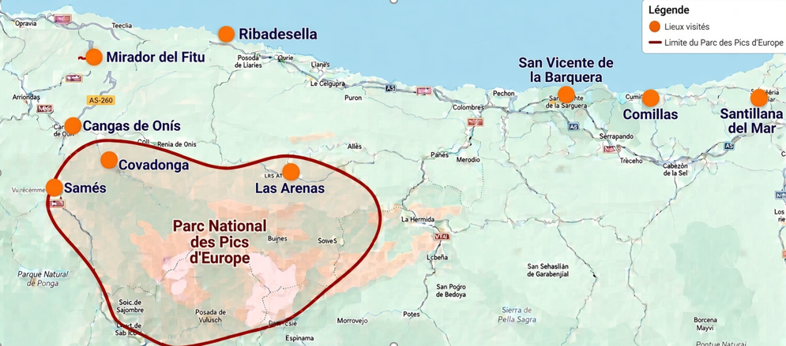
📅 JOUR 1 Santillana → Cangas
Une première journée entre patrimoine cantabrique et arrivée au cœur des Asturies
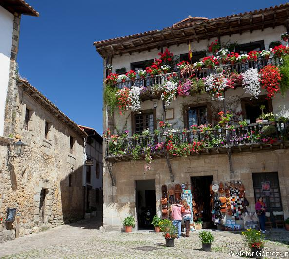
Santillana del Mar
Balade dans l'un des villages emblématiques de Cantabrie : ruelles, maisons traditionnelles et atmosphère médiévale.
Déjeuner
Cocido montañés, morue sur lit de pisto et douceur finale : une première immersion gourmande.
Arrivée à Cangas de Onís
Découverte du pont romain, de la chapelle Sainte-Croix et de l'église de l'Assomption.
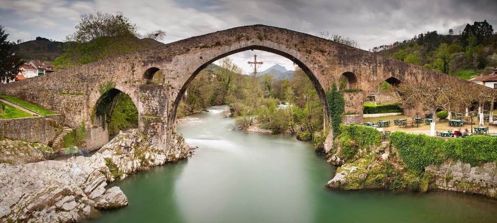
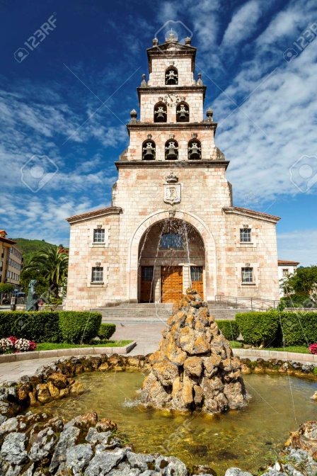
Hébergement
Hôtel rural à Labra, cadre montagneux authentique à quelques minutes du centre. Soirée asturienne : tapas, produits locaux et cidre asturien versé de très haut.
📅 JOUR 2 Covadonga
Une journée au cœur du parc national, entre histoire et montagne
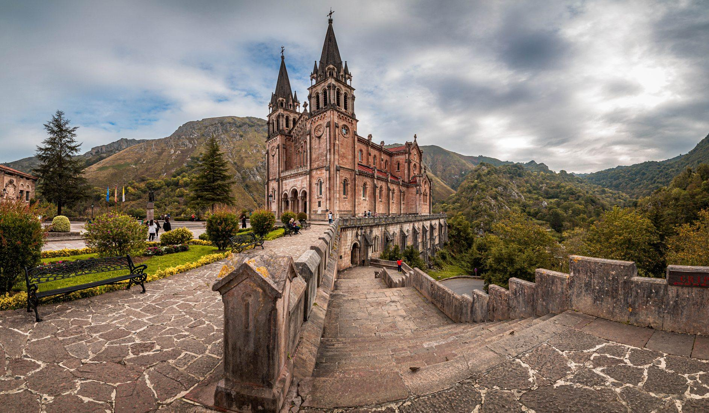
Le Sanctuaire de Covadonga
La Sainte Grotte, la Basilique néo-romane et la statue du Roi Pelayo racontent l'histoire fondatrice des Asturies.
Les lacs de Covadonga
Enol et Ercina : des lacs alpins au cœur d'un décor spectaculaire, propice à la randonnée.
Fromagerie artisanale
Découverte d'un savoir-faire local et des fromages de montagne, dont le Gamonéu AOP.
🍽️ GASTRONOMIE Asturienne
Les Asturies se découvrent aussi à table. Des recettes généreuses et des produits qui racontent le territoire.
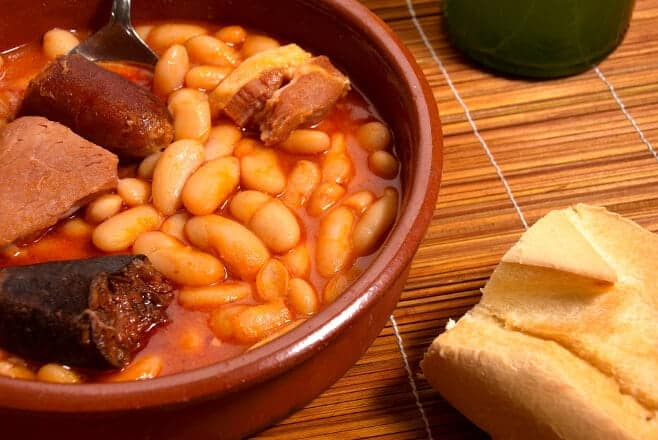
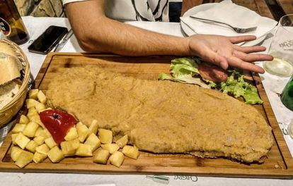
Fabada
Cachopo
Fromages AOP
Cidre asturien
📅 JOUR 3 Mer & montagne
Une journée entre mer Cantabrique et montagnes
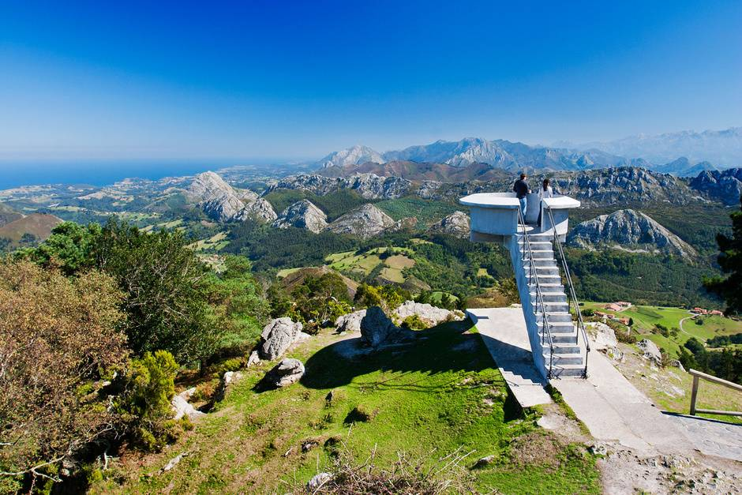
Mirador del Fitu
La Sierra del Sueve et un panorama exceptionnel ouvrent cette journée.
Ribadesella
Le visage marin des Asturies : balade, port et déjeuner face à l'atmosphère côtière. C'est le village des célèbres Indianos.

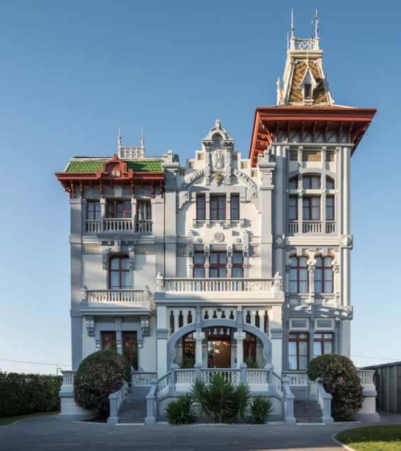
Arenas de Cabrales
Retour vers la montagne et les paysages des Picos avant une soirée libre.
📅 JOUR 4 San Vicente & Comillas
Dernière journée en Cantabrie, entre ría, patrimoine et architecture
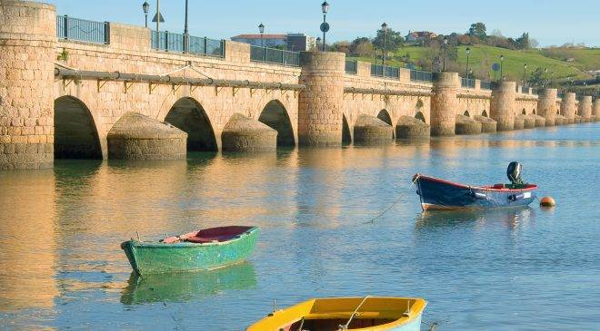
San Vicente de la Barquera
Balade dans le port et le long de la ría, puis déjeuner avant de poursuivre la route.
Comillas
Une étape patrimoniale avec le célèbre Capricho de Gaudí.
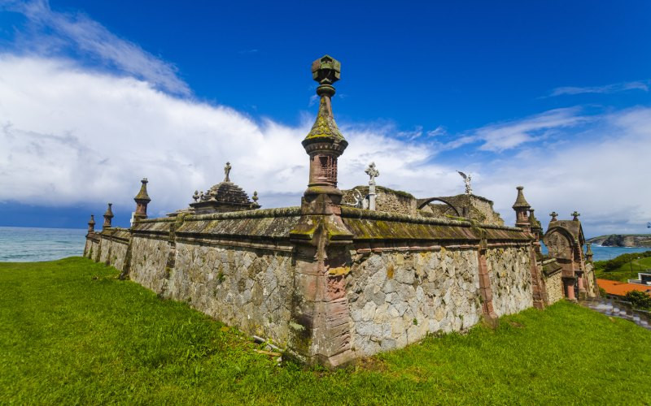

📋 VOTRE ESCAPADE 4 jours, 4 ambiances
Jour 1 Santillana del Mar → Cangas de Onís · Dîner asturien
Jour 2 Covadonga · Lacs d'Enol & Ercina · Fromagerie artisanale
Jour 3 Mirador del Fitu · Ribadesella · Arenas de Cabrales
Jour 4 San Vicente · Comillas · Capricho de Gaudí
Montagne · Patrimoine · Mer · Gastronomie
ℹ️ INFORMATIONS PRATIQUES
Inclus
Hébergement en chambre double, pension complète (sauf 1 dîner), visites mentionnées.
Conseils
- Prévoir des chaussures de marche
- Vêtements adaptés à la montagne
- Ne pas manquer la dégustation de cidre
- Goûter la fabada et le cachopo
Photos : dossier images/ · Les Pics d'Europe